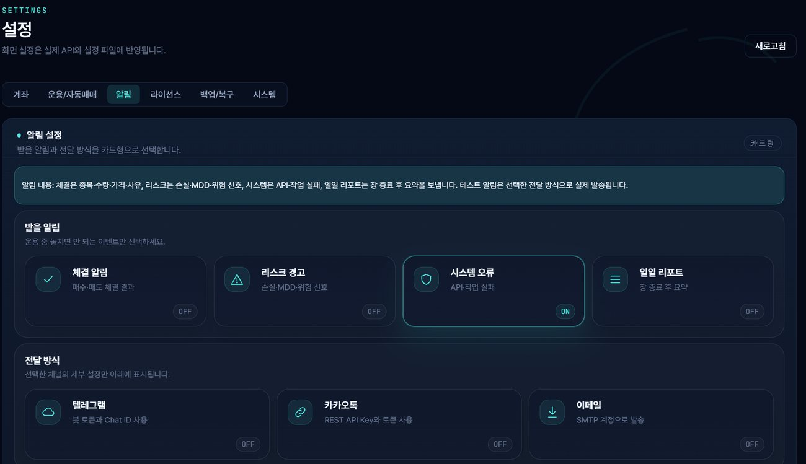

실시간 데이터 수집
시세, 거래량, 변동성, 체결 흐름을 수집해 운용 화면에 반영합니다.
기능 설명은 실제 화면에서 확인 가능한 항목을 기준으로 정리했습니다.
시세, 거래량, 변동성, 체결 흐름을 수집해 운용 화면에 반영합니다.
운용 관점별 후보 종목을 분류하고 모니터링 대상으로 정리합니다.
후보 종목의 등급, 전략 구분, 참고 정보를 한 화면에서 관리합니다.
종목별 비중, 현금 비중, 손절·익절 기준을 함께 확인합니다.
주문계획과 조건 충족 여부를 감시하고 실행 흐름을 기록합니다.
데이터 수집, 종목 스캔, 자동매매 시작·종료 시간을 관리합니다.
계좌 잔고와 보유종목 상태를 화면에 반영합니다.
주문, 체결, 실패, 수익률, 사유 이력을 저장합니다.
계좌, 매매 설정, 알림, 라이선스, 백업/복구 항목을 분리해 관리합니다.
단순 설명보다 중요한 것은 사용자가 어느 화면에서 어떤 값을 보고 어떤 판단을 할 수 있는지입니다. Alpha Viper는 기능 단위를 대시보드, 종목 선별, 포트폴리오, 설정, 로그 화면으로 분리해 확인성을 높였습니다.


